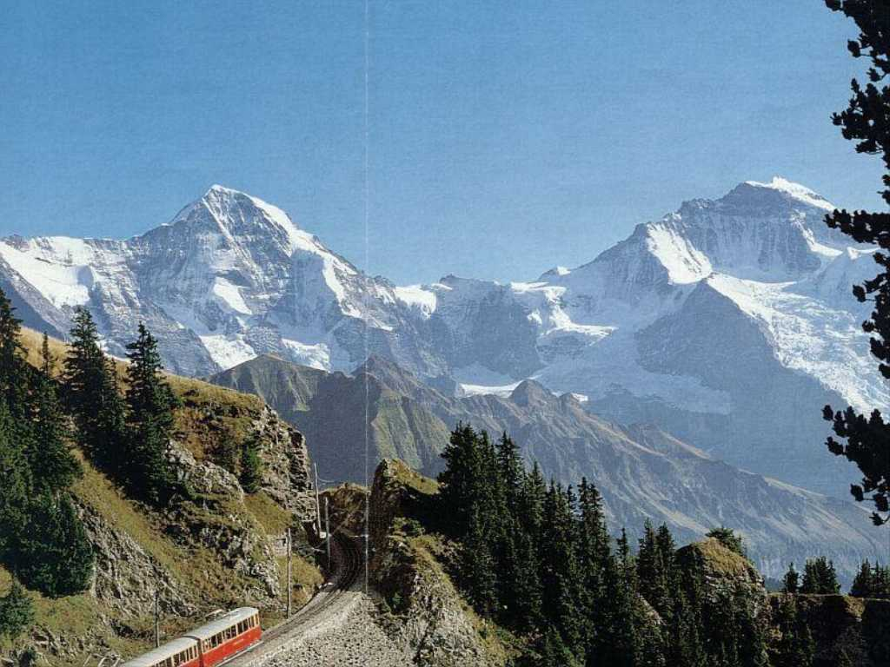

August 1973 Jungfraujochbahn
スイスアルプスの雄大な景色を登山電車で楽しみ雪の積もらない北壁の断崖をもつ３,９７０ｍのアイガーの中腹駅まで上がりさらに３,４５４ｍヨーロッパで最も高いユングフラウヨッホ駅まで登った ここからは全長２４ｋｍ幅１,６００ｍ厚さ１,０００ｍヨーロッパ最大のアレッチ氷河と４,１５８ｍのユングフラウヨッホが見えた ここはヨーロパの分水嶺で北はライン川を下って北海へ南は地中海へ雪解け水が流れる